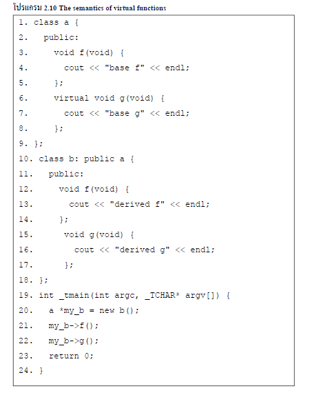
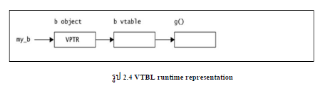

| C++ ช่วยให้คำจำกัดความของการทำงานเสมือนจริง ฟังก์ชันเสมือนเป็นฟังก์ชันที่สมาชิกของคลาสที่ได้รับการประกาศว่าการใช้คำสำคัญในระบบเสมือน ฟังก์ชันการทำงานอาจถูกแทนที่ด้วยฟังก์ชันที่มีชื่อเหมือนกันในคลาสที่ได้รับมา ตัวชี้ไปยังวัตถุคลาสที่ได้รับมาอาจถูกมอบหมายให้กับที่พักในระดับ first class และตัวชี้ให้ฟังก์ชันที่เรียกว่าผ่านตัวชี้ ไม่มีฟังก์ชันการทำงานเสมือนจริงที่มีการเรียกฟังก์ชันเรียกคลาสได้เนื่องจากมีการเชื่อมโยงกับ static pointer เมื่อใช้ฟังก์ชันการทำงานเสมือนจริงให้คลาสที่นำมาใช้เป็นฟังก์ชันที่เรียกว่ามีการเชื่อมโยงกับประเภทแบบไดนามิกของอ็อบเจกต์ | |||
| โปรแกรม 2.10 แสดงให้เห็นถึงการทำงาน Semantic ของระบบเสมือนจริงที่ คลาสจะถูกกำหนดให้เป็นฐานของคลาสและประกอบด้วยฟังก์ชัน f() และ ฟังก์ชันเสมือน g ( ) Class B คือได้มาจากทั้ง a และ override สองฟังก์ชัน
ตัวชี้ my_b มีฐานที่มีการประกาศคลาสใน Main () แต่ถูกกำหนดค่าโดยอ็อบเจกต์ของคลาส B ที่นำมาใช้ได้ เมื่อใช้ฟังก์ชัน nonvirtual my_b->f() จะถูกเรียกในบรรทัดที่ 21 ให้ใช้ฟังก์ชัน f ( ) ที่เกี่ยวข้องกับ ( คลาสหลัก ) จะถูกเรียกได้ เมื่อใช้ฟังก์ชันเสมือน my_b->f() จะถูกเรียกในบรรทัดที่ 22 ฟังก์ชัน g() ที่เกี่ยวข้องกับการที่ได้รับมาคลาส B จะถูกเรียกว่า the derived clas

|
|||
| C++ คอมไพเลอร์ส่วนใหญ่นำไปใช้โดยใช้ฟังก์ชันเสมือนฟังก์ชันเสมือนตาราง VTBL ที่เป็นอาร์เรย์ของ พอยน์เตอร์ VTBL ฟังก์ชันที่ถูกใช้งานที่จัดส่ง Runtime สำหรับฟังก์ชันเสมือนการเรียก อ็อบเจกต์แต่ละอันใน VTBL ผ่านตัวชี้เสมือน VPTR ในส่วนหัวของอ็อบเจกต์ VTBL จะมีตัวชี้ไปยังแต่ละการนำไปใช้งานของฟังก์ชันเสมือนได้ รูป 2.4 แสดงโครงสร้างข้อมูลที่ได้จากตัวอย่าง | |||

|
|||